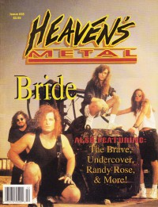

CMnexus
: Contemporary Christian culture, music, and media.
|
|
Heaven's Metal, Nov / Dec 1992, #38
| Cover |
|---|
|  | | Writers in this Issue |
|---|
Bach, David
Beeman, Bob
Carpenter, Marc
Dyer, Jason
Hart, David S.
Jenison, David A.
Knight, Joey
Lott, Jeff
Mullaghy, Michael
Scheetz, Jeff
Scott, Anthony
Sterling, Phil
Van Pelt, Doug
Z., Fred
|
Cover Feature:
- "Bride's Hard Rock Playground" by David A. Jenison
Article:
- "Undercover's Devotion" by Doug Van Pelt
- "Breaking Through With Randy Rose" by Jason Dyer
- "The Home of the Brave" by David S. Hart
What ... Sez:Album Review:Concert Review:
- Novella by Michael Mullaghy
- "Unplugged (Almost)" by Phil Sterling
- Living Sacrifice by Marc Carpenter
- Tourniquet by Anthony Scott
- "A Day In Your Face" by Pastor Fred Z.
Review (Other):
- "Reissue Mania" by Doug Van Pelt
Pastor Bob by Pastor Bob
Inside / Outside by David Bach
Licks & Tricks by Jeff Scheetz
HM Back Page: "Here Comes The Bride"
|
|